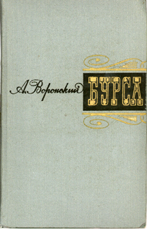
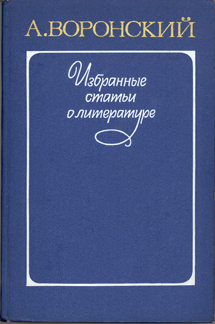
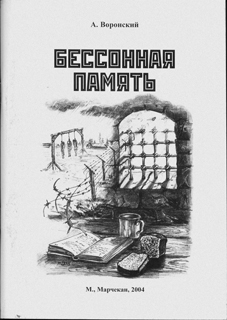

Soviet Literature Sites
| Home | Introduction | Chronicle | Bibliography | Texts | Photos | DocumentsWorks by Voronsky
Books Published Posthumously
| Cover | Description |
|---|---|

|
Title: Articles of Literary Criticism.
Publisher: Moscow: Sovetskii Pisatel'. Year: 1963. Tirazh: 8500. Pages: 423. |
|  |
Title: The Seminary.
Publisher: Moscow: Khudozhestvennaia literatura. Year: 1966. Tirazh: 50,000. Pages: 320. |

|
Title: In Search of Living and Dead Water
Publisher: Moscow: Khudozhestvennaia literatura. Year: 1970. Tirazh: 50,000. Pages: 432. |

|
Title: Izbrannoe [Selections].
Publisher: Moscow: Khudozhestvennaia literatura. Year: 1976. Tirazh: 50,000. Pages: 629. |
|  |
Title: Selected Articles About Literature.
Publisher: Moscow: Khudozhestvennaia literatura. Year: 1982. Tirazh: 5000. Pages: 527. |

|
Title: Izbrannaia proza [Selected Prose].
Publisher: Moscow: . Year: 1987. Tirazh: 100,000. Pages: 655. |

|
Title: The Art of Seeing the World
Publisher: Moscow: Sovetskii pisatel'. Year: 1987. Tirazh: 9500. Pages: 704. |

|
Title: Eye of the Hurricane. Novellas.
Publisher: Voronezh: Tsentral'noe Chernozemnoe knizhnoe izdatel'stvo. Year: 1990. Tirazh: 15,000. Pages: 238. |

|
Title: Art as the Cognition of Life. Selected Writings 1911-1936.
Publisher: Oak Park, MI: Mehring Books. Year: 1998. Pages: 536. |

|
Title: Die Kunst, die Welt zu sehen.
Publisher: Essen: Arbeiterpresse Verlag. Year: 2003. Pages: 551. |
|  |
Title: Sleepless Memory.
Publisher: Moscow: Marchekan. Year: 2004. Tirazh: Pages: 80. |

|
Title: Hard Work.
Publisher: Moscow: Antikva. Year: 2004. Tirazh: 100. Pages: 360. |

|
Title: Waters of Life and Death. Volume 1.
Publisher: Moscow: Antikva. Year: 2005. Tirazh: Pages: 170. |

|
Title: Waters of Life and Death. Volume 2.
Publisher: Moscow: Antikva. Year: 2005. Tirazh: Pages: 376. |

|
Title: Mister Britling Goes All the Way.
Publisher: Moscow: Antikva. Year: 2005. Tirazh: Pages: 244. |

|
Title: Collection of Articles Published in the Newspaper "Rabochii krai" 1918-1920.
Publisher: Moscow: Antikva. Year: 2006. Tirazh: 100. Pages: 388. |

|
Title: Literary Records.
Publisher: Moscow: Antikva. Year: 2006. Tirazh: Pages: 212. |

|
Title: Gogol.
Publisher: Year: [2006]. Tirazh: Pages: 496. |
| Books by Voronsky | Articles by Voronsky | Material about Voronsky | Correspondence |
|---|---|---|---|
|
|